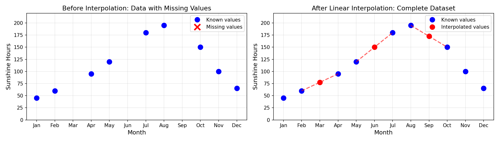

Pandas Pre-processing
We now have a deeper look at the operations we can perform as we ingest data using the Pandas library in Python.
Pandas is a powerful tool for data manipulation and analysis, and it provides a variety of functions to clean, transform, and prepare data for analysis.
These start at the very beginning, when we read the data into a DataFrame, and continue through various stages of preprocessing.
We are going to explore these concepts through a walked-through approach. We will use historical weather data that is freely available online and manipulate it to ease its interpretation.
Step 1: Loading the Data
We’ll start by loading weather data from Cardiff Bute Park. This dataset contains monthly weather observations spanning several decades.
Note. Panda’s function read_csv() can read both from a local file and from a public URl, as in this case.
Step 2: Initial Data Exploration
Before we start cleaning, let’s understand what we’re working with.
To do so, we first check the amount of data that we have by inspecting the shape of the data frame and the names of the various columns.
It is clear that we read useful data but also less useful one:
Useful data - We have weather measurements (Tmax, Tmin, Tmean for temperature; Rain for precipitation; Sun for sunshine hours; AF for air frost days)
Less useful data - The Unnamed: 0 column appears to be a redundant index - The status column is mostly empty and indicates data status - There’s redundancy between Year/Month and Date columns
Note. We can check the details of the various datatypes and amount of valid data using the dataframe method
info().
It is clear that some columns are full of data and some almost empty. We will need to clean this up.
We can get quick statistics of the data distribution by calculating some main statistics.
The .describe() method computes summary statistics such as count, mean, standard deviation, minimum, maximum, and quartile values for all numerical columns in the dataframe.
Note. The output of the
describe()method is itself a dataframe. Try and explore it!
Understanding the Columns
Let’s understand what each column represents:
- Unnamed: 0: Index column (we’ll handle this)
- Year: Year of observation
- Month: Month number (1-12)
- Tmax: Maximum temperature (°C)
- Tmin: Minimum temperature (°C)
- AF: Air Frost days (days with temperature below 0°C)
- Rain: Rainfall (mm)
- Sun: Sunshine hours
- status: Data status indicator
- Date: Date string
- Tmean: Mean temperature (°C)
Step 3: Data Type Conversions
Pandas has inferred the data types, but let’s check if they’re appropriate for our analysis.
Converting Date Column to Datetime
The Date column is currently stored as text (object). This is not ideal, as it does not leverage the advanced capabilities of pandas when dealing with time data.
For example, pandas datetime variables allow to easily filter data by date ranges, resample to different time frequencies (e.g., yearly averages), or create time-based visualizations with proper axis labels.
Indeed, we can convert it to a proper datetime type which will preserve the temporal order of the data points.
To perform the conversion, we use the pandas function pd.to_datetime. Notice that this is not a dataframe method.
Now we can perform boolean tests using dates!
Step 4: Handling the Index
Notice the Unnamed: 0 column? This is an artifact from the CSV file and bears little to no information.
The index column is important as it simplifies slicing and plotting. Since we are dealing with a time series, a natural choice for the index column is to use the date itself.
We can do this by setting the index of the column with set_index
Step 5: Detecting Missing Values
Real-world data often has missing values. Let’s investigate.
Missing data in pandas is encoded as NaN (Not a Number). We can check for missing values using the isnull() method combined with sum() to get a count of missing values per column.
We need a strategy to handle these missing values. It is useful to see what the rows with missing data look like. We can do this by filtering the dataframe using the isnull() method.
For example, we can check what the rows with a missing Sun value look like.
It looks like entire rows are missing, which suggests that the data for those months was not recorded. We will need to carefully handle these missing values.
Step 6: Handling Missing Values
We have three main strategies for missing data: 1. Drop rows/columns with missing values 2. Fill with specific values (mean, median, forward fill, etc.) 3. Interpolate based on surrounding values
Let’s handle each column appropriately.
Handling the Status Column
As we have seen earlier, the status column is mostly empty and doesn’t seem critical for our analysis. Let’s drop it. uding the drop() method.
Here the axis=1 argument specifies that we want to drop a column (not a row), avoiding potential ambiguities. Now the dataframe looks as follows:
Handling Missing Sun Data
For the Sun (sunshine hours) column, interpolation could make sense as sunshine hours vary smoothly over time.
Interpolation means to estimate missing values based on existing data points. In simple temrs, we can think of it as “filling in the gaps” by looking at the values before and after the missing data.
For example, imagine you have measurements of sunshine hours for most months but some months are missing. By interpolating, we can estimate the sunshine hours for those missing months based on the values from the surrounding months.

Visually, in the case of linear interpolation, this looks like connecting the dots with straight lines and reading the value where the missing point should be:
We have various interpolation strategies that are available out of the box that go beyond simple linear interpolation. These include polynomial interpolation, spline interpolation, and others (which we will not explore in this workshop but you are invited to have a look yourself). Clearly, more complex methods require more computational resources, may use more parameters, and may be more prone to produce unexpected results. The may, however, be more accurate in some situations (if duly motivated).
We can specify the method using the method argument in the interpolate() method.
Final Check for Missing Values
We operated our interpolation only on the Sun column. Let’s check if there are any remaining missing values in the dataframe.
This is visible in plots as gaps or breaks in the lines. We can use matpltolib to visualize the data and check for continuity. Remember that the .index attribute is now our datetime index, i.e. our natural independent variable.
If we want to apply a method to all columns (including Tmean), we can simply call the interpolate() method without specifying a column.
Replot the data to confirm that there are no gaps (but also shows the limitations of local interpolation).
Step 7: Extracting Date Components
Pandas is very powerful when dealing with datetime data. It is capable of transforming datetime data into various useful components.
For example, our date time is in YYYY-MM-DD format. This means that we have the year, month, and day all in one column.
We can use this to extract useful individual components year, month name, season, etc.
Any daytime columns has many attributibes, such as .year, .month, .day, .dayofweek, etc.
We can operate on them to perform insightful analyses.
We can for example extract the month name from the datetime index and create a new column Month_Name to store it. We can do the same for the quarter of the year.
Creating a Season Column
Using the month we can even create a new categorical column, labelling the data by season.
This leverages the power of data to apply any arbitrary function to the data frame using the apply() method.
In this case we crate a very simple custom function that maps month numbers to season names.
We then pass the name of the custom function to the apply() method of a specific column (in this case the Month column).
Note. This is an example of Python treating functions as first-class objects, i.e., we can pass them as arguments to other functions/methods. It is a simple instance of a broader programming paradigm called functional programming.
Step 8: Creating More Derived Features
We can continue operating on teh data to create more derived features using simple arithmetic operations.
These additional features allow us to aggregate the data and perform an initial analysis.
A useful tool for this is the groupby() method, which allows us to group the data by specific columns and compute aggregate statistics for each group.
For example, we may want to see which month is more often classified as rainy on average.
We can group the data by month and compute the mean rainfall for each month.
To do this we use the following syntax:
dataframe_name.groupby(‘grouping_column_name’)[‘column_to_aggregate’].aggregation_function()
Step 9: Exporting Cleaned Data
Finally, let’s export our cleaned and enriched dataset for future use.
Pandas can export in many different formats. One of the most common is a pure text formal called CSV (comma-separated values).
We can use the to_csv() method of the dataframe to export the data to a CSV file.
It is also possible to write (and, indicentally, read) other formats such as Excel files, JSON files, SQL databases, and more. They sometimes require additional libraries to be installed.